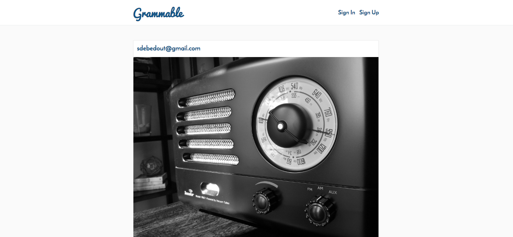

Carrie Crow
Web Developer
Carrie Crow is a full stack web developer, trained through the University of Wisconsin Extension program. She supported IT projects as a Project Manager and Scrum Master, and she is excited to dig into more technical problems.
Code Snippets
Temperature Conversion
This Ruby program will prompt the user for a temperature
in degrees Celsius and let the user know what the
corresponding temperature is in Fahrenheit.
puts "Please enter degrees in Celsius:"
celsius = gets.chomp.to_f
def conversion(degree)
return (degree * 9 / 5 + 32)
end
fahrenheit = conversion(celsius)
puts "That is #{fahrenheit} degrees Fahrenheit!"
puts "Please enter a number:"
number_input = gets.chomp.to_i
last_digit = number_input % 10
#Identify unusual use cases like 11th, 12th, or 13th.
last_pair = number_input % 100
if last_digit == 1 && last_pair != 11
number_input = number_input.to_s + "st"
elsif last_digit == 2 && last_pair != 12
number_input = number_input.to_s + "nd"
elsif last_digit == 3 && last_pair != 13
number_input = number_input.to_s + "rd"
else
number_input = number_input.to_s + "th"
end
puts "That is the #{number_input} item!"
Ordinal Challenge
This Ruby program will convert a plain number
to the ordinal of the number. So for example,
if the user enters 2, it will display 2nd, if
the user enters 3, it will display 3rd, etc.
Foobar
This Ruby program is an adaptation of a classic technical
interview problem which displays sequences
of the Foobar pattern.
puts "How many items do you want to see?"
list_length = gets.chomp.to_i
number = 1
while number <= list_length
if number % 3 == 0 && number % 5 == 0
puts "Foobar"
elsif number % 3 == 0
puts "Foo"
elsif number % 5 == 0
puts "Bar"
else
puts "#{number}"
end
number = number + 1
end
Web Apps
Quote Generator

A database-powered quote generator with a mobile-first
design, using the Ruby on Rails framework, HTML, and CSS.
Uses Git and GitHub for version control, and launched
on Heroku.
Yelp Clone

A Yelp clone that integrates with the Google Maps API
and includes features like user comments, star ratings,
image uploading, and user authentication.
Two-Sided Market Place

A two-sided, video-streaming marketplace platform that
features credit card payment capabilities, user role
management, complex user interfaces, and advanced
database relationships.
Test Driven Development

An Instagram clone that was built using industry-standard, test-driven
development following numerous red/green/refactor cycles.
Single Page Todo Application

This single-page to-do application features a
fluid user interface that– by using JavaScript–
allows users to rapidly add dynamic content.
Agile Team Project

Worked on an Agile software development team building
a chess application. Under the guidance of a senior software engineer,
we had weekly Agile team meetings for code reviews, sprint planning,
and feature assignments.
Carrie has developed proficiency and expertise
in the following programming languages and
comfort with the following tools.